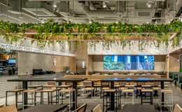
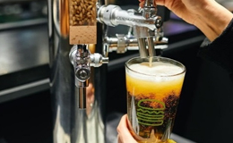

FOOD & DRINK
BRAND STORY
DELIVERY
쉐이크쉑은 신선하고 좋은 재료의 음식과 즐겁고 활기 넘치는
지역사회의 모임 공간, 그리고 게스트를 향한 따뜻한 호스피탈리티를 통해 우리의 핵심 가치인 “Stand For Something Good”을 실천합니다.
쉐이크쉑의 모든 메뉴는 좋은 식재료에서 시작됩니다.
01
쉐이크쉑의 시그니처 앵거스 비프 패티는 양질의 맛과 식감으로 버거의 맛을 완성합니다.

02
토종 효모를 사용한 포테이토 번은 다양한 재료와 어우러지며 쫄깃한 식감을 선사합니다.

03
매일 아침, 매장에서 신선하게 제조되는 커스터드는 쫀득한 식감과 진한 풍미를 자랑합니다.

쉐이크쉑은 자연과 함께, 이웃과 함께하는 공간을 설계합니다.
01
매장이 위치한 지역의 특성을 반영한 호딩/인테리어를 통해 지역 사회와 하나 됩니다.

02
식물 및 나무 목재를 적극적으로 활용한 친환경 그린 인테리어를 통해 도심 속의 휴식공간을 제공합니다.
03
지역 아티스트와의 협업을 통해 완성한 아트워크를 통해 지역의 정체성이 담긴 매장 인테리어를 완성합니다.

쉐이크쉑은 활기 넘치는 지역 사회의 모임공간입니다.
01
쉐이크쉑을 방문하는 모든 이를 내 집에 온 손님처럼 응대하며 따뜻한 호스피탈리티를 제공합니다.

02
지속적인 기부 활동을 통해 판매 수익금의 일부를 지역사회에 환원합니다.

03
지역의 고유 브랜드와 협업하여 메뉴를 개발하고 원재료를 수급하여 지역 사회와 함께 성장합니다.
